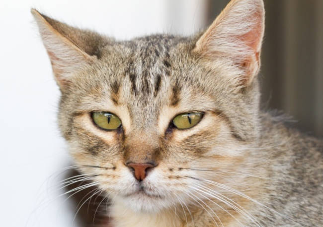
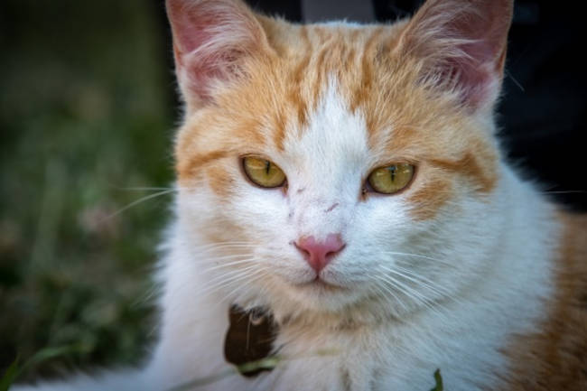
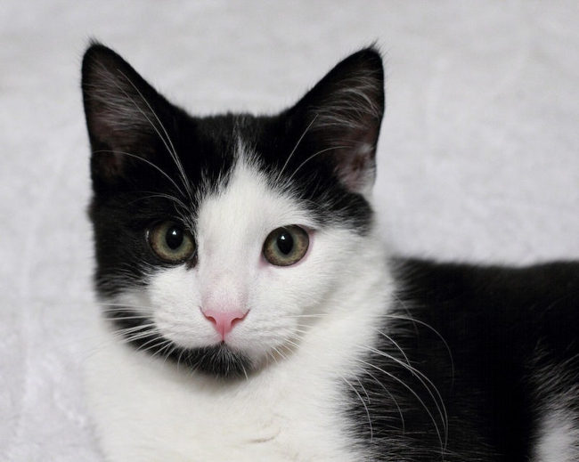

Milon é um gato rajado. Sabe de si mesmo, e não baixa a cabeça pra nenhum ser humano. Gosta de seu espaço e agua fresca!
Angelina é uma gata tanto sábia quanto amorosa. Gosta de seu espaço, mas nem por isso rejeita um carinho humano. Gosta de lugares altos e passa o dia inteiro observando!
Reginaldo é o famoso gato mansão. Não quer saber de nada além de comer, brincar e dormir. Gosta de carícias e não deixa o dono quieto!
Se interessou por algum?
Ligue 00000-0000 para mais informações!
voltar<1>